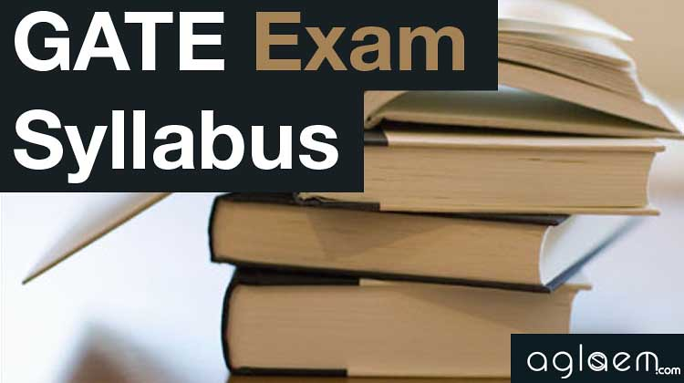

Syllabus of Gate Examination


Member login |
Here in this article, please find the details of the GATE Syllabus 2022. The GATE Exam Syllabus 2022 PDF is for a Computer Based Test conducted jointly by the Indian Institute of Science (IISc) Bangalore and the seven Indian Institutes of Technology (IITs) at Bombay, Delhi, Guwahati, Kanpur, Kharagpur, Madras and Roorkee. This exam is conducted on behalf of the National Coordination Board (NCB)-GATE, Department of Higher Education, Ministry of Education (MoE), Government of India. 
The GATE Syllabus 2022 is essential as it helps the students get an idea about the subjects and topics covered for the GATE exams. Qualifying the GATE Exams 2022 is crucial for the students. It will determine their admission and financial assistance to Postgraduate Programs (Master’s and Doctoral) with the Ministry of Education (MoE) and other Government Scholarships / Assistantships, conditional on the admission criteria of the admitting institute. Meanwhile, some PSUs (Public Sector Undertakings) also consider the GATE Score for their recruitment. At the same time, several other universities in India and abroad base their admissions on students’ performance in these exams. Therefore, knowing the GATE Exam Syllabus will help the students to plan their studies accordingly to ace the exams. |